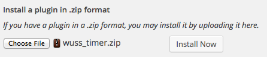

Thank you for purchasing the
Wordpress Timers plugin
NOTE:
This plugin extends the WordPress Login plugin. As such, it requires that either both the WordPress Login for MBSCore and the MBSCore packages, or the WordPress Login package be installed before you install this kit.
NOTE 2:
To use the included TimeDelayDemoScene, make sure to drop the Login prefab in the scene also. You need to be logged in so the system knows who's timers to fetch and update.
1. Preparation
Preparation is a three step process:
- Upload, install and activate the WUSS_Timers.zip file as a plugin on your Wordpress website.
Instructions are at the bottom of this Readme - Drag the WULogin prefab into your scene.
- Instantiate any prefab(s) containing your timers after successful login
2. QUICKSTART
The fastest way to get started using the kit is to:
- Find the LoginScanner prefab and configure it by dragging in a prefab that contains your timers
- Drop the LoginScanner and the Login prefabs into a scene.
To create a custom timer prefab of your own:
- create an empty GameObject and drop in as many timers as you like
- For each timer:
- Give it a unique name
- Specify the initial starting value of the timer and the initial max value of the timer
- Select how many seconds this timer will wait before awarding the point
- Indicate if the timer should count down to 0 or count up to the timer's max value
That is it. The timers are now configured and working and ready for you to queary and update. Now you just have to write a script to display the values in a way that is meaningful to your application
Note:
The first time a timer is used, it's name and values are stored from the values set in the inspector. After that, it's values come from the server and the inspector values are ignored. If you want to make changes to something you will need to do so manually in your Wordpress database using phpadmin.
3.Available properties
The WUTimer class has the following properties for you to use
-
Value and ValueBounds
This is the current value of the stat and the maximum value this stat can have, respectively. Both values are set via the inspector upon start but their values are overriden by the values returned from the server Timer and TimerBounds
This is the number of seconds remaining before a point is awarded and the length of the timer, respectively. The TimerBounds is set via the inspector upon start but it's value is overriden by the value returned from the serverPreviousValue
Whenever the value of Value changes, the previous value is stored here just in case you want to calculate the difference for some reason. It starts off as 0.FormattedTimer
This will return the amount of seconds left on the timer as a string. Depending on how long the value is it will display days:hours:minutes:seconds, cutting off days and hours if not needed. The result takes into account your preference as to counting down or counting up for this particular timer
4.Available functions
The WUTimer class has the following functions for you to use
- FetchStat()
This will contact the server and retrieve the values used to populate Value, ValueBounds, Timer and TimerBounds. This function is called during Start and it is not required to be called again. It is made available in case something went wrong and you need to manually refresh the values.
- UpdateStat()
This will contact the server and retrieve only the values used to populate Value and Timer. This function is automatically called when the timer reaches it's peek or hits 0.
- SpendPoints(int amount)
SpendPoints(int amount, bool force_to_0)This function will remove points from the stat by requesting the action from the server and then parsing the received server response.
If force_to_0 is set to true, the server will allow you to spend more points than you have but set the results to 0 afterwards.
If not specified, it defaults to false which means the points you spend must be less than equal to the points you have. If you try to send more than you have, the server will trigger it's onServerContactFailed event. This will not break the game and you are free to hook into this event if you want to but in the event that this is called, the stat still retains is correct value and operation continues as normalNOTE:
If you attempt to pass a negative value, the function will fail and act like a call to UpdateStat() - GivePoints(int amount)
This will update Value by the amount you specify. The WUTimer will automatically give points as required but should you want to award points for powerup purchases or in-game awards or something like that, this function will accommodate your requirements. After calling this function, value will be between 0 and ValueBounds, inclusive.
NOTE:
You can also pass in negative values if you want.
This will be functionally equvalent to calling SpendPoints(amt, false) - UpdateMaxPoints(int amount)
This is useful in the event of a level up or in stat upgrade screens etc. This increases the ValueBounds value by amount. Negative values are allowed but the result will never be less than 0
- UpdateMaxTimer(int amount)
I am not sure why anyone might want this function but I am including it in the event that it might be useful to someone. This changes the value of TimerBounds by amount
- SetMaxPoints(int amount)
This is useful in the event of a level up or in stat upgrade screens etc. This sets the ValueBounds value to amount. Negative values results in 0
- SetMaxTimer(int amount)
I am not sure why anyone might want this function but I am including it in the event that it might be useful to someone. This changes the value of TimerBounds to amount. Minimum value for TimerBounds is 1.
4. Available callbacks
- onContactedServer<cmlData>
This is called after a successful call to the server and contains the values used to populate the fields for this stat. Depending on what function was used to call the server, the results may differ.
Possible results from server contact: fid The name of the field. Useful for callbacks that function on all stats to determine the relevant stat p The current points value stored on the server t The number of seconds left before a timer event is triggered px The current point bounds value as stored on the server tx The current timer bounds value as stored on the server NOTE:
If a call to SpendPoints() fails, the current values are returned also and thus also triggers this event - onTimerEvent<int>
This is called after the timer reached 0 or the TimerBounds value, as defined for the current stat. This passes the new value of Value as it's parameter
5. Installing the plugin
| Step 1. Log into your Wordpress dashboard and select "Add new" from the Plugins menu |  | |
| Step 2. At the top of your screen, select "Upload" | ||
| Step 3. Find the wuss_timer.zip file in Assets/myBad Studios/WUSS/Wordpress/Plugins and upload that to your website. |  | |
| Step 4. After it is uploaded it will ask you to activate the plugin. Do so and you are done... |  | |
 | ||